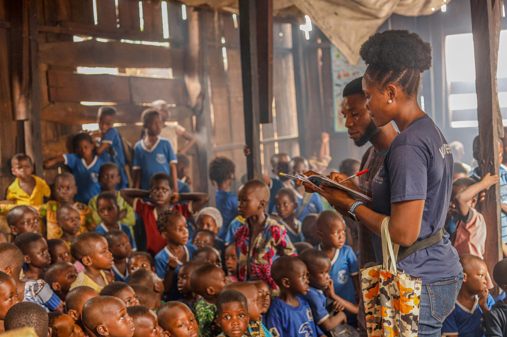

Projetos Sociais e Oportunidades
Voluntariado: Oportunidades
Confira as oportunidades de voluntariado e inscreva-se para participar. Sua ajuda faz a diferença!
-
Reforço Escolar — Bairro Alfa
Descrição breve do projeto, metas e impacto. Aulas de reforço para crianças carentes.
Vagas: 10 voluntários disponíveis
-
Oficinas de Tecnologia
Capacitação para jovens em programação e eletrônica, preparando-os para o mercado de trabalho.
Vagas: 5 instrutores voluntários
Como doar e Apoiar Nossos Projetos
Você pode contribuir com doações pontuais ou mensais. Estamos trabalhando para integrar pagamentos online e garantir total transparência.
